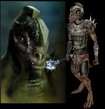
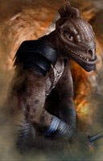

|
ORIGINE DELLA RAZZA
CENNI DI STORIA DEI TROGLODYTE
ALTRI EROI DEL POPOLO
TROGLODYTE
LA SOCIETA'
TROGLODYTE |

 |
I trogloditi posseggono una pelle squamosa di
colorazione unica oppure maculata. Si tiri 1d100: [01-50] tinta unica; [51-100] maculato.
Si noti che la tinta Asparago rappresenta una colorazione rara indicativa di purezza razziale. Per tale motivo un personaggio di questa razza otterrà un bonus +1 a tutte le prove di appearance effettuate nei confronti di un altro membro della medesima razza qualora possegga squame o macchie di questa tinta. |

|
MODIFICATORE RAZZIALE ALLE ABILITÀ |
| Bonus di +1 alla Forza e di +1 alla Costituzione |
| Penalità di -2 all'Intelligenza |
| MODIFICATORE BASE AI PUNTI ESPERIENZA | 20 % malus + costo iniziale di 2500 punti esperienza |
|
PUNTEGGI MINIMI E MASSIMI RAZZIALI PER LE ABILITÀ |
||
| ABILITÀ | MINIMO | MASSIMO |
| Forza | 12 | 18 |
| Intelligenza | 3 | 12 |
| Saggezza | 3 | 18 |
| Costituzione | 12 | 18 |
| Carisma | 3 | 16 |
| Destrezza | 8 | 18 |
|
ACCESSO ALLE VARIE CLASSI |
|
| CLASSE | LIVELLO MASSIMO |
| COMBATTENTE - Fighter | 12° livello |
| COMBATTENTE - Berserker | 11° livello |
| COMBATTENTE - Enrager | 11° livello |
| COMBATTENTE - Adoratore del Sangue | 10° livello |
| SACERDOTE - Cleric | 13° livello |
| SACERDOTE - Blood Priest | 11° livello |
| VAGABONDO - Thief | 12° livello |
| VAGABONDO - Brigand | 11° livello |
|
ACCESSO ALLE CLASSI MULTIPLE |
| COMBATTENTE/SACERDOTE |
|
ACCESSO ALLE DIVINITA' |
| Azatar, Forze della Natura |
|
ABILITÀ DEI LADRI |
PUNTEGGIO INIZIALE |
| Pick Pocket | 15 % |
| Open Lock | 5 % |
| Find/Rem. Trap | 0 % |
| Move Silently | 10 % |
| Hide in Shadows | 5 % |
| Detect Noise | 20 % |
| Climb Wall | 60 % |
| Read Languages | - 15 % |
| FATTORE MOVIMENTO BASE | 7 esagoni |
| SENTIRE RUMORI | 20 % |
|
DIMENSIONI E PESO |
SISTEMA DI CALCOLO DELL'ALTEZZA E DEL PESO |
| Altezza del maschio | 130 cm. + 3 cm. per punto di costituzione + 2d12 cm. |
| Altezza della femmina | 125 cm. + 3 cm. per punto di costituzione + 2d8 cm. |
| Peso del maschio | 55 kg. + 3 kg. per punto di costituzione + 3d10 kg. |
| Peso della femmina | 50 kg. + 3 kg. per punto di costituzione + 3d8 kg. |
|
CATEGORIA DI ETÀ |
ANNI |
| Starting Age | 12 + 1d2 |
| Childhood | 0 - 12 |
| Adolescence | 13 - 25 |
| Adulthood | 26 - 45 |
| Middle Age* | 46 - 60 |
| Old Age** | 61 - 89 |
| Venerable Age*** | 90 + |
| Maximum Age | 90 + 2d10 |
* Middle Age: I
personaggi di questa categoria di età perdono 1 punto di forza ed 1 punto di
costituzione, acquisiscono però 1 punto di intelligenza ed 1 punto di saggezza
(non potendo, in ogni caso, superare i massimi razziali).
** Old Age: I personaggi di questa categoria di età perdono 2 punti di
destrezza, 2 ulteriori punti di forza ed 1 ulteriore punto di costituzione,
acquisiscono però 1 ulteriore punto di saggezza (non potendo, in ogni caso,
superare i massimi razziali).
*** Venerable Age: I personaggi di questa categoria di età perdono 1
ulteriore punto di destrezza, di forza e di costituzione, acquisiscono però 1
ulteriore punto di intelligenza e di saggezza (non potendo, in ogni caso,
superare i massimi razziali).


| NOME | Creatura Mostruosa |
| COSTO IN PUNTI CREAZIONE | NESSUNO - ACQUISIZIONE AUTOMATICA |
| REQUISITO PARTICOLARE | NESSUNO |
|
DESCRIZIONE  |
Indipendentemente
dal livello raggiunto i personaggi Troglodyte ottengono una serie di
caratteristiche
proprie della loro natura mostruosa. Per tale motivo
tutti i personaggi
Troglodyte
saranno tenuti all'applicazione delle seguenti
regole: |
| NOME | Sensi Superiori |
| COSTO IN PUNTI CREAZIONE | NESSUNO - ACQUISIZIONE AUTOMATICA |
| REQUISITO PARTICOLARE | NESSUNO |
| DESCRIZIONE |
I
Troglodyte
sono
creature dotate di sensi superiori per tale motivo costoro ottengono i
seguenti benefici: |
| NOME | Tratti Bestiali |
| COSTO IN PUNTI CREAZIONE | NESSUNO - ACQUISIZIONE AUTOMATICA |
| REQUISITO PARTICOLARE | NESSUNO |
| DESCRIZIONE |
I Troglodyte
sono creature
bestiali. Per tale motivo, nonostante il loro addestramento, i personaggi
Troglodyte
mantengono alcuni tratti bestiali. In particolare: |
| NOME | Abitudini Bestiali |
| COSTO IN PUNTI CREAZIONE | NESSUNO - ACQUISIZIONE AUTOMATICA |
| REQUISITO PARTICOLARE | NESSUNO |
| DESCRIZIONE |
I Troglodyte
sono creature
bestiali avverse alle sofisticazioni tecnologiche e sociali proprie delle società ad alto
livello di civilizzazione. Per tale motivo i personaggi
Troglodyte
ottengono
uno svantaggio nell'acquisizione di alcuni tipi di competenze. In particolare: |
| NOME | Avversione alla Civiltà |
| COSTO IN PUNTI CREAZIONE | NESSUNO - ACQUISIZIONE AUTOMATICA |
| REQUISITO PARTICOLARE | NESSUNO |
| DESCRIZIONE |
I Troglodyte
sono creature
bestiali avverse alle sofisticazioni tecnologiche e sociali proprie delle società ad alto
livello di civilizzazione. Per tale motivo i personaggi
Troglodyte
ottengono
uno svantaggio nell'acquisizione di alcuni tipi di competenze. In particolare: |
| NOME | Infravisione |
| COSTO IN PUNTI CREAZIONE | NESSUNO - ACQUISIZIONE AUTOMATICA |
| REQUISITO PARTICOLARE | NESSUNO |
| DESCRIZIONE |
Gli Elfi Alti
posseggono, oltre alla normale forma di vista, l'infravisione entro
18 metri di raggio.
Perché l’infravisione funzioni occorre che si
al buio lontano da qualsiasi zona illuminata. Se una zona illuminata
si trova entro 30 metri di distanza dal personaggio ed illuminata da
una fonte luminosa capace di illuminare per un raggio di più di 3 metri
l’infravisione non si attiverà. Fonti luminose di minore intensità (come
una candela) impediscono l’attivazione dell'infravisione solo quando il
personaggio si trova all'interno della zona illuminata. Durante la notte
la luce della luna piena e quella della luna maggiore della metà non
permette l'attivazione dell’infravisione, la luce delle stelle e la luce
della luna minore della metà permettono invece l’infravisione. Si noti
che in foreste particolarmente fitte, dove non penetra molta luce, può
attivarsi l’infravisione anche con la luna piena. Gli occhi del
personaggio attivano l’infravisione in modo graduale ed automatico senza
che tale attività degli organi possa essere comandata: |
| NOME | Tossina del Troglodita |
| COSTO IN PUNTI CREAZIONE | NESSUNO - ACQUISIZIONE AUTOMATICA |
| REQUISITO PARTICOLARE | NESSUNO |
|
DESCRIZIONE  |
I Troglodyte sono in
grado di emettere una tossina gassosa quando combattono con i propri
nemici. Si tratta di un veleno gassoso che la creatura può diffondere
naturalmente nelle posizioni adiacenti alla propria. La diffusione è
automatica ed avviene alla fine di ogni round in cui la creatura è
impegnata in un combattimento in corpo a corpo senza che sia necessaria
alcuna attivazione (è richiesto ovviamente che per tutto il round il
personaggio sia capace di pensare correttamente, non potendo essere
diffusa, ad esempio, quando il personaggio cade in coma, dorme, è
stordito, ecc… Alla
fine di ogni round di combattimento, dunque, tutte le creature presenti
in una qualsiasi posizione adiacente a quella occupata dal personaggio
saranno soggette al seguente veleno gassoso: |
| NOME | Mimetizzazione |
| COSTO IN PUNTI CREAZIONE | NESSUNO - ACQUISIZIONE AUTOMATICA |
| REQUISITO PARTICOLARE | NESSUNO |
| DESCRIZIONE |
I Troglodyte sono in grado di mimetizzarsi nell'ambiente circostante qualora si trovino in zone con abbondante presenza di rocce (ad esempio, colline o montagne rocciose e caverne). In particolare, fino a quando la creatura resta ferma è capace di mimetizzarsi nell'ambiente indicato. Orbene, fino a che resta ferma costei non potrà essere notata dalle creature che passino ad una distanza superiore a 30 metri ed otterrà una possibilità pari all'80% di non essere notata dalle creature che le passino ad una distanza inferiore. Utilizzare quest'abilità richiede un'azione complessa dalla durata dell'intero round e la creatura potrà risultare, quindi, nascosta solo alla fine del round. Per restare nascosta la creatura non potrà compiere altre azioni complesse e non potrà spostarsi (si faccia eccezioni per piccoli movimenti effettuati sul posto). Si noti che questa abilità non può essere utilizzata nei confronti di chi ha già visto la creatura fino a che questa non esce dalla sua linea visiva. Si noti che il tiro percentuale è effettuato segretamente dalla creatura un'unica volta ed il suo risultato sarà applicato a qualsiasi soggetto fino a che costei non si sposti od agisca diversamente. Il risultato di questo tiro si considererà incrementato di una penalità del +10% al fine di verificare se la creatura si è nascosta nei confronti di soggetti dotati di Sensi Superiori o che posseggano la competenza Observation ed abbiano superato una prova nella stessa (+15% nei confronti delle creature che abbiano entrambe le caratteristiche). Il risultato del tiro si considererà incrementato di un'ulteriore penalità del +25% al fine di verificare se la creatura si è nascosta nei confronti di soggetti dotati di infravisione (che sia attiva e sempre che la creatura si trovi all'interno del suo raggio). Qualora la creatura risulti nascosta con successo alla vista dei suoi avversari ed agisca improvvisamente costei imporrà loro una penalità di -3 alla relativa prova sulla sorpresa. |
| NOME | Istinto da Predatore |
| COSTO IN PUNTI CREAZIONE | 1 |
| REQUISITO PARTICOLARE | NESSUNO |
| DESCRIZIONE |
Essendo parzialmente
creature bestiali alcuni
Troglodyte
hanno imparato ad utilizzare i loro sensi
superiori nelle battute di caccia rappresentando i migliori cacciatori
della loro
razza.
Per tale motivo coloro
che possiedono questo talento razziale ottengono il seguente beneficio: |
| NOME | Armi della Tradizione Troglodyte |
| COSTO IN PUNTI CREAZIONE | 2 |
| REQUISITO PARTICOLARE | NESSUNO |
| DESCRIZIONE |
I Troglodyte
hanno la propensione per l'utilizzo di alcune specifiche armi che da
secoli la loro razza utilizza in battaglia. In particolare, rientrano
nella tradizione dei Troglodyte la
Mace, la
Great Mace ed il
Stonehead Javelin. Per tale motivo coloro che
possiedono questo talento razziale ottengono i seguenti benefici: |
| NOME | Robustezza Fisica |
| COSTO IN PUNTI CREAZIONE | 2 |
| REQUISITO PARTICOLARE | PUNTEGGIO IN COSTITUZIONE ALMENO PARI A 13 |
| DESCRIZIONE |
Alcuni Troglodyte sono dotati di una struttura
fisica particolarmente robusta. Per tale motivo, i Troglodyte che scelgono questo talento
razziale ottengono il seguente beneficio: |
| NOME | Scatenare le Fiamme Primordiali |
| COSTO IN PUNTI CREAZIONE | 2 (una volta al giorno) / 3 (due volte al giorno) / 4 (tre volte al giorno) |
| REQUISITO PARTICOLARE | PUNTEGGIO IN INTELLIGENZA ED IN SAGGEZZA ALMENO PARI A 10 |
| DESCRIZIONE |
Alcuni
Troglodyte conoscono
un rituale primordiale che permette loro di scatenare le fiamme
primordiali sui loro avversari.
Per tale motivo coloro
che possiedono questo talento razziale ottengono il seguente beneficio: |
|
Streams of Fire (Evocation) Range: 15
metri Quando il mago lancia questo incantesimo un fascio di fiamme vorticose parte dalle sue mani e colpisce la creatura selezionata entro il raggio d'azione della magia (9 metri al 1° livello, 12 metri al 2° e 3° livello, 15 metri al 4° e 5° livello, e così via) fino ad un massimo di 18 metri a partire dal 6° livello. La vittima subirà, dunque, danni da fuoco magici pari ad 1d3 danni ogni due livelli di lancio + 1 danno per livello di lancio (1d3+1 danni al 1° livello di lancio, 1d3+2 danni al 2° livello di lancio, 2d3+3 danni al 3° livello di lancio, 2d3+4 danni al 4° livello di lancio, 3d3+5 danni al 5° livello di lancio, 3d3+6 danni al 6° livello di lancio) fino ad un massimo di 4d3+7 danni al 7° livello di lancio. La vittima ha diritto a superare un tiro salvezza su riflessi per dimezzare i danni subiti. |
| NOME | Scatenare il Veleno Primordiale |
| COSTO IN PUNTI CREAZIONE | 3 + 5% malus punti esperienza |
| REQUISITO PARTICOLARE | PUNTEGGIO IN INTELLIGENZA ED IN SAGGEZZA ALMENO PARI A 10 |
| DESCRIZIONE |
Alcuni
Troglodyte conoscono
un rituale primordiale che permette loro di scatenare gas velenosi
primordiali sui loro avversari.
Per tale motivo coloro
che possiedono questo talento razziale ottengono il seguente beneficio: |
|
Stinking Cloud (Evocation)
Range: 30 metri Quando il mago lancia questo incantesimo, una nuvola di nauseabondi vapori gialli e verdastri appare in una sfera di 9 metri di diametro. Il mago può posizionare il centro della nube fino a 30 metri di distanza dallo stesso. Qualsiasi creatura presente nell'area o che vi entri (anche semplicemente passando) deve effettuare un tiro salvezza contro veleno per non restare intossicata. Le creature che sbagliano il tiro salvezza resteranno intossicate e non potranno fare altro che tossire. In particolare, ogni round, tossiranno in luogo di compiere una qualsiasi altra azione complessa. Queste creature potranno, però, effettuare azioni di mezzo movimento ed altre free action e non subiranno alcuna penalità al combattimento. Chi ha fallito il tiro salvezza continuerà a tossire fino a che resterà all'interno della nube ed in ogni caso continuerà a tossire per 1d4+1 rounds dopo averla abbandonata (o dopo che è svanita). Coloro che superano il tiro salvezza, invece, non subiranno gli effetti dell'intossicazione ma dovranno superare un nuovo tiro salvezza qualora alla fine di ogni round si trovino ancora all'interno della nube. Gli effetti tossici di questa magia devono essere considerati a tutti gli effetti come un veleno. In caso di presenza di vento moderato la durata dei vapori tossici sarà dimezzata (per eccesso), laddove del vento forte, invece, spazzerà via i vapori alla fine del round in corso. Il componente materiale di questo incantesimo è un uovo marcio che si consuma al lancio della magia. |